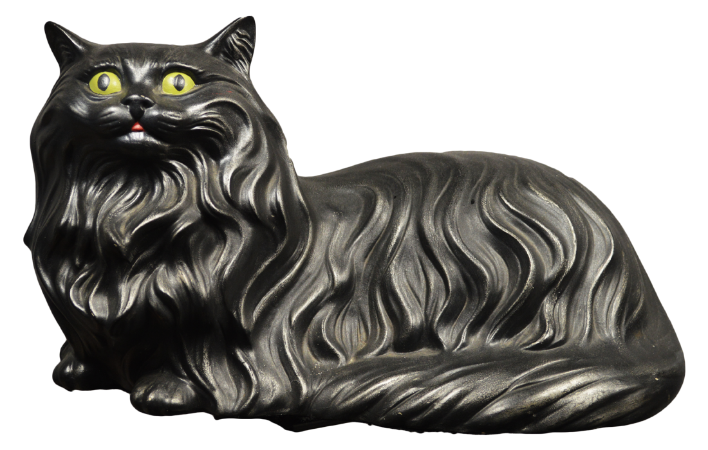

About Domestic Cats
Learn More About The Domestic Animals These Sculptures Are Modeled After
The domestic cat or the feral cat is a small,
typically furry, carnivorous mammal. They are often called house cats when kept as indoor pets or
simply cats when there is no need to distinguish them from other felids and felines. Cats are often
valued by humans for companionship and for their ability to hunt vermin. There are more than 70 cat breeds; different
associations proclaim different numbers according to their standards.
Further Reading

Cats are similar in anatomy to the other fields, with a strong, flexible body, quick reflexes, sharp retractable claws,
and teeth adapted to killing small prey. Cat senses fit a crepuscular and predatory ecological niche. Cats can hear
sounds too faint or too high in frequency for human ears, such as those made by mice and other small animals. They can
see in near darkness.
Like most other mammals, cats have poorer color vision and a better sense of smell than humans. Cats, despite being
solitary hunters, are a social species and cat communication includes the use of a variety of vocalizations (mewing,
purring, trilling, hissing, growling, and grunting), as well as cat pheromones and types of cat-specific body
language.
Did You Know...
Humans generally start to feel uncomfortable when their skin temperature passess about 38 °C (100 °F),
but cats show no discomfort until their skin reaches around 52 °C (126 °F), and can tolerate temperatures
of up to 56 °C (133 °F) if they have access to water.
Cat Play
Domestic cats, especially young kittens, are known for their love of play. This behavior mimics hunting and is important
in helping kittens learn to stalk, capture, and kill prey. Cats also engage in play fighting, with each other and with
humans. This behavior may be a way for cats to practice the skills needed for real combat, and might also reduce any
fear they associate with launching attacks on other animals.
Mythology
According to a myth in many cultures, cats have multiple lives. In many countries, they are believed to have nine lives,
but in Italy, Germany, Greece, Brazil and some Spanish-speaking regions, they are said to have seven lives, while in
Turkish and Arabic traditions, the number of lives is six. The myth is attributed to the natural suppleness and
swiftness cats exhibit to escape life-threatening situations.
Also lending credence to this myth is the fact that falling cats often land on their feet, using an instinctive righting
reflex to twist their bodies around. Nonetheless, cats can still be injured or killed by a high fall.
4 Interesting Facts!
- The average cat sleeps 16-18 hours per day.
- A cat can jump approximately seven times its height.
- A group of kittens is called a kindle.
- Cats knead with their paws when they are happy
Hunting And Feeding
Cats hunt small prey, primarily birds and rodents, and are often used as a form of pest control.
Domestic cats are a major predator of wildlife in the United States, killing an estimated 1.4 - 3.7 billion birds
and 6.9 - 20.7 billion mammals annually. The bulk of predation in the United States is done by 80 million feral and stray cats.
Effective measures to reduce this population are elusive, meeting opposition from cat enthusiasts. In the case of free-ranging pets,
equipping cats with bells and not letting them out at night will reduce wildlife predation.